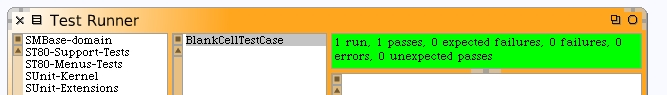

Write the #isOn method for BlankCell.

The #isOff method is simple.
When we go back to our test runner and re-run the unit test it passes.
Write unit tests to check the state of the line segments in our cell. Back on the test case, when we go to write the new test method #testCellSegmentsState we get a warning from Squeak because it knows the method #isSegmentOnFor: does not exist.

Just confirm the unknown selector. We need to go back to the model and write it. Here's the completed method.
When you go back to the test runner you will find that it passes and that we now have 2 running tests.